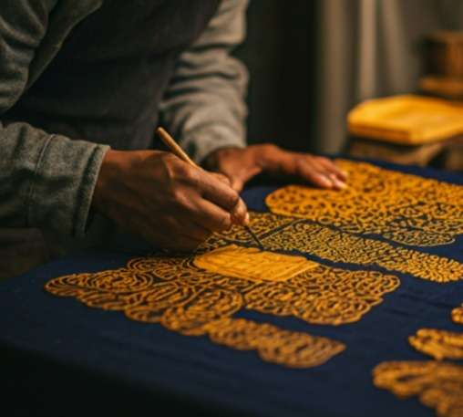
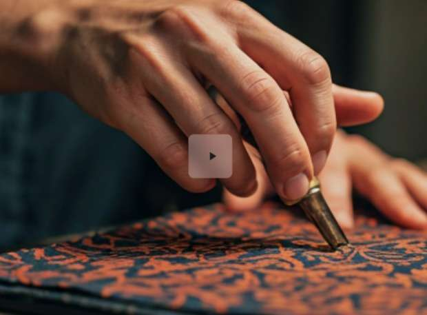

Temukan pakaian tekstil langka beresolusi tinggi dan temukan makna filosofis di balik pola tradisional yang diwariskan dari generasi ke generasi.
Lihat Koleksi ➔Benamkan diri Anda dalam proses penciptaan yang berirama melalui film dokumenter intim yang menampilkan para perajin ahli dan teknik abadi mereka.
Tonton Sekarang ➔